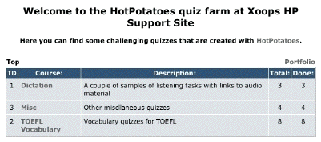
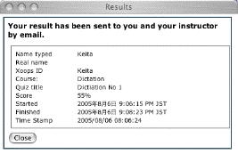

XoopsHP Users Guide
For version 1.0 (Aug 5, 2005)
To Japanese
Contents
- Introduction
- This module helps you to ..
- Module Overview
- How to install
- How to upgrade
- Support
- Quick Start
- Top Page
- Course List
- Portolio
- Quiz List
- Result View
- Taking a quiz
- Starting a quiz
- ID prompt
- Hint button
- Checking answers
- Feedback of the result
- Navigating among blanks
- Adding quizzes
- Preparing quiz file
- Supported quiz file formats
- Images, audio, and other recourses
- Uploading the quiz file
- Updating the quiz
- Preferences
- Misc
- How to change the menu title
- Dead links in the quiz
- Cookie
- Security software
- Tips for teachers
Introduction
This modules helps you to ...
- Manage Hot Potatoes quiz files on the web
- Let your students take the quizzes on the web
- Keep track of your student progress and results
all within the sophisticated environment XOOPS, so that in combination with other features of XOOPS such as Forum, News, and Download modules, teachers can create their online class portals with little effort and budget. Please read Tips for Teachers for more information.
Module Overview
- Top
- Portfolio: List all result records
- Course List
- Quiz List
- List: Titles, posted timestamps, stats etc
- Results: Links exist only when there are relevant
records
- Simple View
- Detailed View
- Action: Delete buttons are available for admins.
- Action: Edit or delete buttons are available for admins.
- Portfolio: List all the results of the particular course. For admins data for everyone is displayed, but for users only him or her own data is shown.
- Quiz List
- Administration Menu
- Preferences: Site admins can set module-wide basic settings here.
- Manage Quizzes: Module admins can manage courses and quizzes here.
- Add Course
- Course List
- Add Quiz
- Quiz List
How to install
Please read INSTALL.txt.
How to upgrade
Please read UPGRADE.txt.
Support
If this manual does not solve the problem, feel free to ask me directly in the support forum of this module (http://www.awajis.net/xoopshp/).
Quick Start
- First create at least one course in the management section (Administration Menu -> Manage Quizzes).
- Start adding quizzes, with titles, quiz files to upload, and courses they belong to.
- To update the content of an existing quiz, go to the quiz edit page and upload another quiz file.
- If you have admin permission to the module, you will see Edit or Delete buttons in the quiz list view.
Top Page
Course List
In the top page of the module, you will see a list of available courses with their brief descriptions, along with the number of quizzes you have already finished and the total number of available quizzes in each course. If you are a module admin, you will see the number of quizzes at least one student has finished in each course instead.
The course titles are linked to the quiz lists, where users can click the title of the quiz and start the quiz.
Portolio
Unless you are a guest user, you see a link to your portfolio section at the top right of the course list table. For users, all the past records will be listed in the portfolio, and for admin users, all the records of all the users will be displayed. The quiz title is linked to the corresponding quiz so that users can jump directly to the quiz from the list.
You can specify a particular course to display results from, and you can sort the record items by clicking the heading in the table.
Admin users can delete record items in the list by clicking the delete button right next to the items.
Quiz List
Quiz ID, title, date and time the quiz was posted, the number of students who finished the quiz, the highest scores of the user and all the users are displayed in the quiz list. If a user has finished a particular quiz at least once, a Result link will be shown in the action column, which will show all the records of the student related to the quiz.

The portfolio link in this section will conveniently takes uses to the list of their records of this particular course.
The admin users additionally see Edit and Delete buttons for each quiz, so that they can replace the quiz content or delete the quiz with all its user records. The result button for the admins will display all the records of all the users for the particular quiz.
Result View
In the result view, there are two display modes: simple view with only basic information, and detailed view with more information such as users' host and IP addresses, etc. Display order can be changed by clicking the header items of the table.
For admin users, a delete button is displayed for each entry in the result list so that they can remove unnecessary entries from the database.
Taking a quiz
Starting a quiz
Users can start a quiz by clicking quiz titles in the quiz list or elsewhere such as the header in the result view etc. Guest users, those who haven't logged in to the site, are prompted with an alert that their result will not be recorded in the database nor sent by email.
ID prompt

Users are then prompted to enter their ID (or names, etc depending on the setting when the quiz was created). This is redundant information because the site username is automatically recorded with the results, but teachers can instruct their students to type some other information as necessary. The quiz will not start properly without typing some text at the prompt.
Hint button

If the quiz was created with the hint feature enabled, a hint button will be displayed. By clicking the button, one letter will be given as a hint in the focused blank in quizzes of the cloze type. Uses of the hint button reduces the final score at the end.
Checking answers
Users can check their answers any time during the attempt. The total score is reduced according to the frequency of answer checking. The perfect answer in the very first check results in a score of 100%. Correct answers will be marked in bold or with some distinct marks, while wrong answers remain for correction. The result of the quiz will not be sent until the user completes the quiz by giving all the right answers.
Feedback of the result
A new window will pop open when the quiz is done, and the score of the quiz is displayed in the new window along with other information. At this point, the same information is recorded in the database and is sent by email to the registered addresses of the poster and the taker of the quiz.
At the bottom of the window, there is a Close button to close both the quiz and the result window at once.
[IMPORTANT] Users must allow their WWW browsers to use pop-up windows. Otherwise the results will not be displayed, recorded nor sent properly.
Navigating among blanks
When filling in blanks in the cloze type quiz, a tab key will move the position of the cursor to the next blank, while shift+tab will move the focus back to the one before the current one. The exiisting answer will be selected right after the movement with the tab key, the user can either start typing a new answer by replacing the old one, or first unselect the old answer by typing a right cursor key before adding new text.
Adding quizzes
Preparing quiz files
Use the latest version of Hot Potatoes and create quiz files. For details, please read the tutorial available at Hot Potatoes homepage (http://web.uvic.ca/hrd/hotpot/tutorials6.htm).
The module tries to alter the source of the quiz file during the upload process so that the CGI option is enabled, regardless of how the quiz was created. However, it heavily relies on subtle matching of the text strings, so it is recommended to have the CGI option turned on when you create the quiz. In that case, you do not need to set anything in the fields of the CGI option.
Supported format of quiz files
XoopsHP is compatible with all the quiz types provided by Hot Potatoes ver. 6: JCloze, JCross, JMix, JMatch, JQuiz. The drag and drop types of quizzes are also supported.
Since quiz files created by older versions of Hot Potatoes may have slightly different structures in their source code, this module can not guarrantee the automatic implementation of the feedback CGI functions properly. As far as the author quickly investigated, sometimes the user ID prompt appears more than once, but this does not affect the feedback feature as a whole.
Images, audio, and other recourses
In this module, only the text source file can be uploaded and stored in the database. In order to publish quizzes with other multimedia content such as images and audio files, you first need to upload them somewhere on the web. Then, when you incorporate those objects in your quizzes, be sure to refer to them by complete URLs, that is, starting from http://. Likewise, if you want to nclude any links in the quiz, use full URLs.
Uploading the quiz file
In the Manage Quizzes section, type the title of the quiz and select the course it belongs to. Then, specify the quiz
file to upload from your hard disk. Press the Add Quiz button. If successful, the quiz will be listed in the quiz
list section in the admin menu, as well as in the quiz list for users.
Updating the quiz

Go into the edit quiz mode from where the Edit link is available. You can directly edit the title and select a new
course, but you cannot edit the content of the quiz source even though it is displayed in the text area for your
reference. To replace the quiz content, prepare a new quiz file first, and upload the file to substitute for the
existing content.
Preferences

Preferences can be set by the site admin users. The module admins (users given admin permission for paricular modules) can not change the preference settings.
The first item in the preferences section is the setting of the Hot Potatoes license. If you have a valid license of the software, check Yes in this section. By setting this to Yes, you will be able to publish quizzes that are not open to the public. To look at it another way, if your license setting is No, anonymous users will be able to access your XoopsHP module automatically even if guest access is turned off in the system preference, in order to ensure that unlicensed quizzes are freely available to anyone on the web.
You can also change the title and the brief description in the top page of the module.
Misc
How to change the menu title
Log in as the site administrator(not as the module admin), and go to the administration menu. Open 'Modules' in 'System Admin' section. In the list of installed modules, change the title of the module as you wish. The title that appears in the main menu will be changed accordingly.
Dead links in the quiz
The module tries to look into the quiz source and make necessary changes. However, the check is not perfect, and there are things it cannot handle properly. One example is the navigation links embedded when the quiz files were originally created, such as the Index button to go back to the index file, or Previous / Next buttons to navigate through the set of quizzes. These will show as dead links when the quiz files are integrated into XOOPS.
To avoid this, the best users can do is to turn off the automatic embedding of the navigation links when they create the quizzes. For details, please consult the Hot Potatoes manual and related documents.
Cookies
In XOOPS as well as in this module, cookies are frequently used to pass necessary information over pages. If the browser is not set to accept cookies, a large part of the functions do not operate properly.
Security software
Security applications such as Norton or McAfee are reported to cause problems in the XOOPS environment. If you persistently have problems , please check if any firewall or virus software is installed and running on your computer. Try turning it off and see whether the problems continue.
Tips for teachers
In a document titled as "Tips for Teachers", several tips are provided for teachers in using XOOPS and XoopsHP for classes.